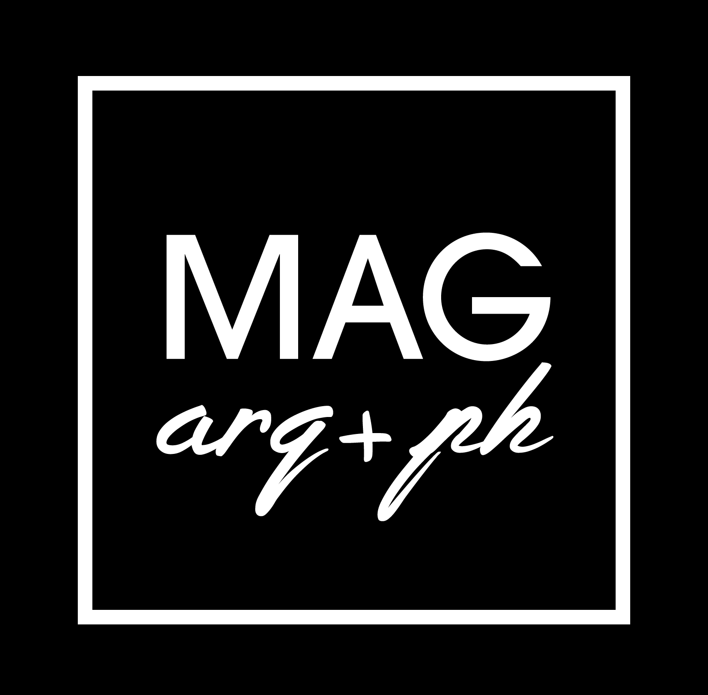

MAGarq es un estudio fundado en el año 2016 por María Antonella Genessini graduada en la Facultad de Arquitectura, Diseño y Urbanismo de la Universidad de Buenos Aires (FADU-UBA). Somos un equipo de profesionales que combina sus conocimientos y experiencias para realizar distintas escalas de obras y programas, desde reformas, viviendas unifamiliares, edificios de alta complejidad, entre otras. Proyectamos obras con una misión orientada al cuidado del medio ambiente, la eficiencia y la maximización de los espacios.
